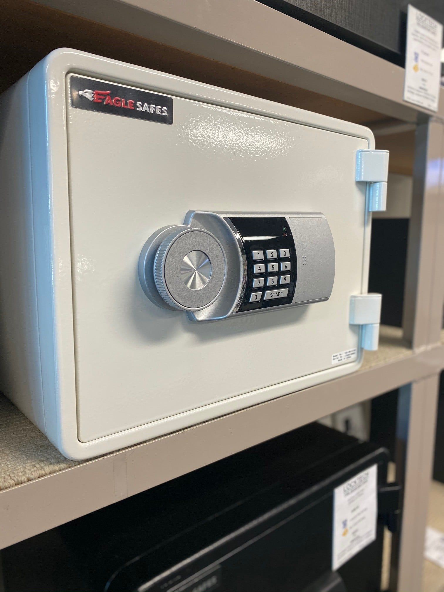
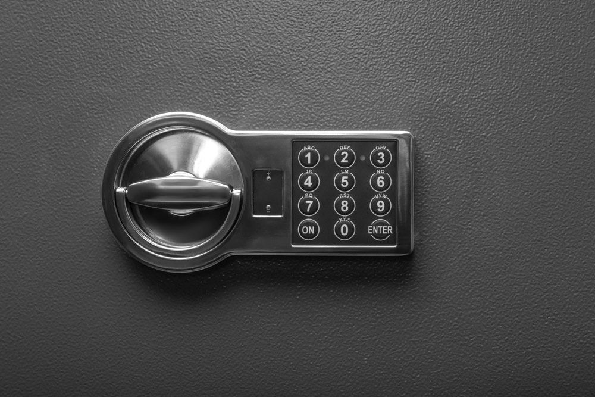

On this page
AT A GLANCE
In both residential and commercial settings, the importance of securing valuable items, sensitive documents and personal belongings cannot be overstated.
Secure Your Valuables

In both residential and commercial settings, the importance of securing valuable items, sensitive documents and personal belongings cannot be overstated. Safes offer a reliable solution, providing protection against theft, fire and Cash Rating *Dependent on your Insurance underwriter.
We proudly offer Burg Wachter, Dominator, CMI, Yale and Eagle Safes, a fantastic range of – hotel style to high security double walled Fire and Cash Rated Safes, suitable for home or office.
At SPL Security Solutions, our selection of safes encompasses a variety of sizes, protection levels and locking mechanisms, including key, combination and digital locks to meet different needs and preferences. Whether you're looking to safeguard family heirlooms, important business contracts or personal documents, we'll find a safe that suits your security requirements. And when you buy a safe from us, we include delivery, a minimum one-year warranty and the very best customer service backup.
Don't leave the security of your most important possessions to chance—call us on (07) 5588 8111. We provide an extensive range of residential and commercial locksmith services throughout the Gold Coast, Brisbane and Northern NSW.
Common Types of Safes
A safe is still one of the most secure ways to store and protect valuable items and sensitive information on your premises. But which kind of safe will suit you best?
- Home Safes
- Commercial Safes
- Wall or In-Ground Floor Safes
- Depository or Cash Dispensing Safes
- Jewellers Safes
- Bankers & Night Deposit Safes
- Fire or Record Protection & Data Safes
- Record Protection Filing Cabinets
- Media Insert Boxes & Fire Chests
- Gun Safes
- Key Control Safes or Cabinets
- Drug Cabinets (Dangerous Goods Safe)
- Strong Room Doors & Book Room Doors or Vaults
- Cigarette Cabinets or Dispensers
- Government Spec Safes & Approved Fire File Cabinets (Class Security Containers)
We proudly stock industry-leading brands such as Dominator Safes, Burg Wachter and CMI Safe Company, renowned for their superior craftsmanship, advanced security features, and proven reliability.

Safe Delivery, Installation & Maintenance

Selecting your safe is just one step in ensuring your most valuable items are secure. At SPL Security Solutions, we offer additional services to help maintain the integrity of your safe including:
Delivery & Installation
- We provide safe delivery and installation services to ensure your new safe is set up correctly and securely. Our team can advise the best location for your safe, taking into consideration factors such as accessibility, weight distribution and the level of security required.
Safe Repair
- Regular maintenance and prompt repair work on your CMI, Burg Wachter or Dominator safes can significantly extend the life of your safe. We can address any issues that might compromise the integrity or functionality of your safe such as wear and tear, mechanical failures or attempted break-ins.
Safe Unlocking
- Our 'Open a Safe' service is available for when you're unable to access your valuables due to forgotten combinations, lost keys or malfunctioning locks. This service employs advanced techniques to unlock safes without damaging the contents inside.
SHOP ONLINE
SPL offers an online shopping experience to purchase your new Safe via the East Coast Safes website (owned and operated by SPL), offering you a variety of the following Safe categories.
- Home Safes
- Commercial Safes
- Wall or In-Ground Floor Safes
- Cash Deposit Safes
- Jewelers Safes
- Bankers & Night Deposit Safes
- Fire or Record Protection & Data Safes
- Record Protection Filing Cabinets
- Media Insert Boxes & Fire Chests
- Gun Safes
- Key Control Safes or Cabinets
- Drug Cabinets (Dangerous Goods Safe)
- Strong Room Doors & Book Room Doors or Vaults
- Government Spec Safes & Approved Fire File Cabinets (Class Security Containers)
Feel free to browse the available listings, and request a shipping quote!